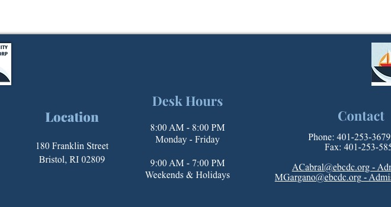

Help for your family.
Making decisions about housing for your senior years can be difficult, so we've written and assembled a few resources to help you and your family think through the options.

Answers to the questions we hear most.
What is Assisted Living?
When and how can we visit?
What is the application process?
What levels of service are available?
- Full-service dining three times a day
- Medication management
- Assistance with bathing, dressing and grooming
- Weekly housekeeping & personal laundry
- Daily activities & outings
- 24-hour personal emergency call response
How much does it cost to live at Franklin Court?
Once I move in, can I come and go as I please?
Can residents have a pet?
Are residents able to have a furnished apartment?
Understanding the difference.
Independent Living
Many seniors are physically able to live on their own, but interested in moving to a Senior Independent Living Community either because they lack the financial resources to own or rent their own home, they don't want the burden of taking care of a house, they prefer a more social environment.
Franklin Court Independent Living Community provides private apartments with full service kitchens where residents are free to set up their living space however they wish.
Assisted Living
Often, when people think of Assisted Living, they conflate it with a nursing home. Assisted Living communities are not nursing homes. Our Assisted Living is a place that seniors can live where they have their own private apartment with kitchenette and private bathroom, while still receiving any needed assistance with daily living activities.
We also offer assistance with scheduling and maintaining medication and personal needs like bathing and dressing. Assisted Living provides many opportunities to participate in social activities.
How do I tell it's time for Assisted Living?
Families often struggle with how they will know when it is time for a loved one to move to an Assisted Living community. Visit and ask the staff. Here's a checklist by no means is this list all inclusive, but it is a good starting point to help you decide if assisted living is right for your loved one.
- Health Issues: Has your loved one had a recent medical scare, fall or accident? Are they having a difficult time bouncing back after surgery? Do they have an ongoing health issues that are worsening? Do they need a wheelchair or unable to do their normal rounds of exercise?
- Difficulty with Daily Activities: Has your loved one had a difficult time during the day to do chores that are necessary to everyday living, such as preparing meals, doing laundry, cleaning, or cooking for themselves? Has shopping or driving become impossible or a source of stress?
- Social Activities: Is your loved one still engaged socially? Do they have place of enjoyment most of the time? Has cooking, getting together with friends become too much for them?
- Frequent Falls / Mobility Issues: Have you noticed evidence of accidents or are emergency rooms on the rise for your loved one? Fall-related complications can be devastating for an older adult, and they can have a major impact on their ability to remain independent and confident in their own home.
- Financial Issues: Does your loved one keep up with their bills? Do they have the ability to manage their finances? Are bills unpaid or are unopened?
- Eating and Cooking Issues: Has your loved one lost a noticeable amount of weight? Are they skipping meals? Are they eating enough of the right types of food?
- Cleanliness: Has your loved one had a hard time keeping up with housekeeping? Is the kitchen and bathroom clean? Is there a lot of clutter?
Talk with our Admissions Director.
Michael Gargano can walk through these questions with you, share what other families have found helpful, and give you a no-pressure tour of the community.
MGargano@ebcdc.org
(401) 396-9020
Ready to talk?
Our admissions director is happy to take your call, even if you're just gathering information.